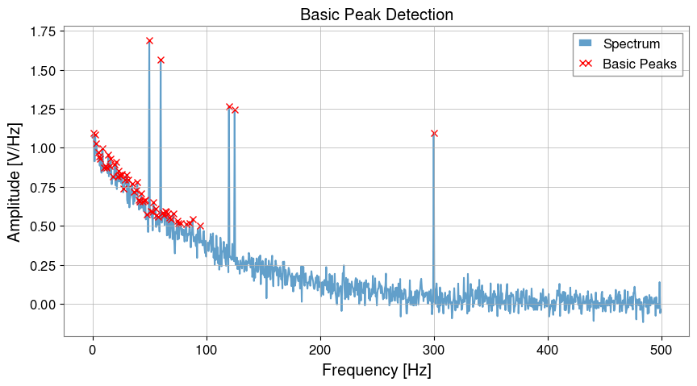
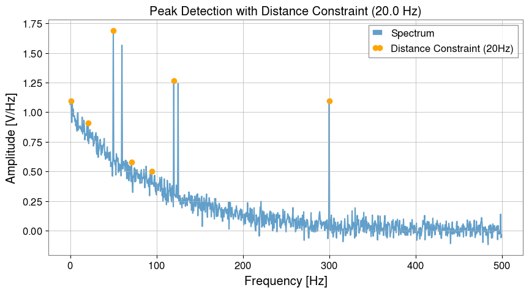
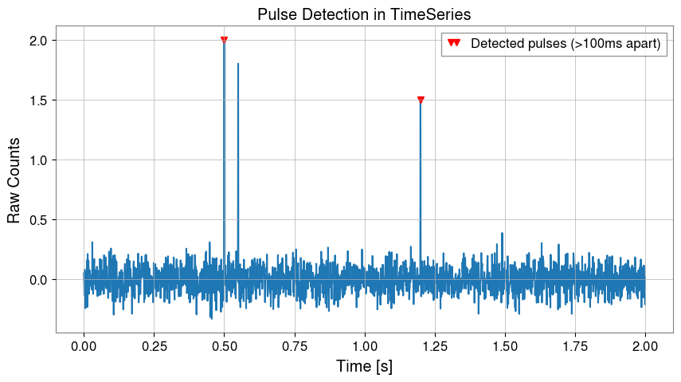

Note
このページは Jupyter Notebook から生成されました。 ノートブックをダウンロード (.ipynb)
Peak Detection (ピーク検出)
gwexpy では、TimeSeries や FrequencySeries に含まれる信号のピークを簡単に検出するための find_peaks メソッドを提供しています。これは内部的に scipy.signal.find_peaks をラップしていますが、物理単位（Hz, 秒など）を用いた直感的なパラメータ指定が可能です。
find_peaks メソッドは、以下の2つを返します。
Peak Series: ピーク点のみを抽出した新しい Series オブジェクト
Properties: scipy が返すピーク特性（プロミネンスや幅など）の辞書
[1]:
import matplotlib.pyplot as plt
import numpy as np
from astropy import units as u
from gwexpy import FrequencySeries, TimeSeries
1. FrequencySeries でのピーク検出
[2]:
# 擬似データの作成
df = 0.5 * u.Hz
f_axis = np.arange(0, 500, df.value) * u.Hz
data = np.exp(-f_axis.value / 100) + np.random.normal(0, 0.05, len(f_axis))
# ピークを追加
peak_freqs_true = [50, 60, 120, 125, 300] * u.Hz
for f in peak_freqs_true:
idx = int(f.value / df.value)
data[idx] += 1.0
spec = FrequencySeries(data, df=df, unit="V/Hz")
# --- 基本的な検出 (しきい値のみ) ---
# peaks は FrequencySeries オブジェクトとして返ってきます
peaks, _ = spec.find_peaks(threshold=0.5)
plt.figure(figsize=(10, 5))
plt.plot(spec, label="Spectrum", alpha=0.7)
plt.plot(peaks, "x", color="red", label="Basic Peaks")
plt.title("Basic Peak Detection")
plt.xlabel("Frequency [Hz]")
plt.ylabel("Amplitude [V/Hz]")
plt.legend()
plt.show()

2. 物理単位による制約 (Distance & Width)
[3]:
dist_constraint = 20 * u.Hz
peaks_adv, props = spec.find_peaks(threshold=0.5, distance=dist_constraint)
plt.figure(figsize=(10, 5))
plt.plot(spec, label="Spectrum", alpha=0.7)
plt.plot(peaks_adv, "o", color="orange", label="Distance Constraint (20Hz)")
plt.title(f"Peak Detection with Distance Constraint ({dist_constraint})")
plt.xlabel("Frequency [Hz]")
plt.ylabel("Amplitude [V/Hz]")
plt.legend()
plt.show()
print(f"Detected peaks: {peaks_adv.frequencies}")

Detected peaks: [ 1. 21. 50. 71. 94.5 120. 300. ] Hz
3. TimeSeries でのピーク検出
[4]:
fs = 1024.0
t = np.arange(0, 2.0, 1 / fs)
ts_data = np.random.normal(0, 0.1, len(t))
# パルスを追加
ts_data[int(0.5 * fs)] = 2.0
ts_data[int(0.55 * fs)] = 1.8
ts_data[int(1.2 * fs)] = 1.5
ts = TimeSeries(ts_data, sample_rate=fs, unit="counts")
# 0.1秒以内の連続したパルスは無視する設定
peaks_t, _ = ts.find_peaks(height=0.5, distance=0.1 * u.s)
plt.figure(figsize=(10, 5))
plt.plot(ts)
plt.plot(peaks_t, "v", color="red", label="Detected pulses (>100ms apart)")
plt.title("Pulse Detection in TimeSeries")
plt.xlabel("Time [s]")
plt.ylabel("Raw Counts")
plt.legend()
plt.show()
